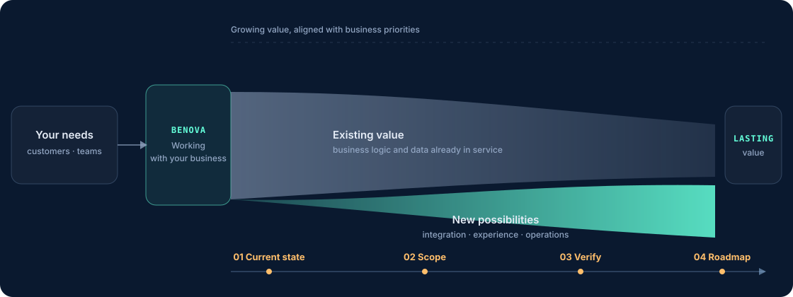

Accumulated business value
Business rules, data and operational knowledge need to keep serving the business throughout modernization.
NOVA is completing its first focus on Orbit–Vista integration. Discuss a suitable assessment scope with Binean.
Discuss scopeNOVA · Insurance core modernization
NOVA combines four solution families — Nexus, Orbit, Vista and Add-ons — so an insurer can start with one insurance business function, evaluate it within an agreed scope and decide the next step.
The first focus is Orbit–Vista integration. Readiness is confirmed per capability and per deployment environment.
Build on the business logic and data already in service instead of replacing everything.
Add modern integration while limiting deep changes to the core.
Unclear transactions are reported for reconciliation instead of being resent automatically.
Your business needs
Insurance core modernization involves business logic, data and the way teams operate. Start by identifying what needs to change and which connections need to remain.
Business rules, data and operational knowledge need to keep serving the business throughout modernization.
A core change can require updates to front ends and integrated systems. Its impact needs to be understood.
Menus, forms and data tables differ between business functions, forcing users to relearn how to work.
Each change needs a defined scope, accountable owners and acceptance criteria; transactions with an unclear outcome must be visible for reconciliation.
NOVA is designed for this approach: preserve the value that matters, introduce new capabilities and verify each step.
Intended value
NOVA is evaluated through its ability to preserve connections, build on business capabilities and improve how systems serve the organization.
Addresses: Accumulated business value
Expand access to existing business capabilities while limiting changes to proven core programs.
Addresses: Connected applications
Current applications and new channels can share one integration layer; compatibility is assessed per system.
Addresses: Controlled transitions
When a transaction outcome is unclear, the system reports it for reconciliation instead of resending it automatically.
Addresses: Inconsistent user experience
Menus, forms, data tables and actions follow the same way of working across business functions.
Benefits are evaluated for each scope. Costs, security, licensing and operational requirements are agreed before deployment.
Four solution families
Orbit connects and coordinates existing business capabilities, opening modern ways to use them with limited deep changes to the core. Vista provides one consistent workspace. Together they form the central axis and first delivery focus; Nexus and Add-ons belong to the same model.
Connect and coordinate business capabilities
Orbit connects existing business capabilities, coordinates processing flows and opens modern ways to use them with limited deep changes to the core. The Aster demonstration software ships with the Orbit family to show a flow without using a running system.
One consistent workspace
Vista brings business capabilities to users in one consistent workspace: menus, tabs, forms and data tables follow the same way of working.
Development and operations tools
The development and operations family: build, environments, test data and shared administration. Its intended scope extends to DevOps, batch and daily operational tasks.
Complementary capabilities
Complementary directions around the Orbit–Vista axis, including AIRA, AIRAS and Astra — a next-generation insurance core.
How to get started
Agree on what needs to be demonstrated, how to measure it and the conditions for delivery. Assessment results provide a basis for choosing the next investment scope.
Choose the insurance business function, the core system and connected applications, then identify the priority problem.
Agree on compatibility requirements, test data, measurement methods and acceptance criteria.
Compare business results, performance and operational effort with the current state for the same scope.
Identify what can proceed or needs further verification, with requirements and an indicative investment scope.

Share your core system, the applications that need to stay connected and your goals. Binean will help define an appropriate assessment scope.
Three areas to clarify when defining scope
The core system, applications and connections to preserve.
Business results, performance and operations.
Delivery requirements and an indicative investment scope.
Start the conversation by email. Scope, readiness and assessment conditions will be confirmed before work begins.